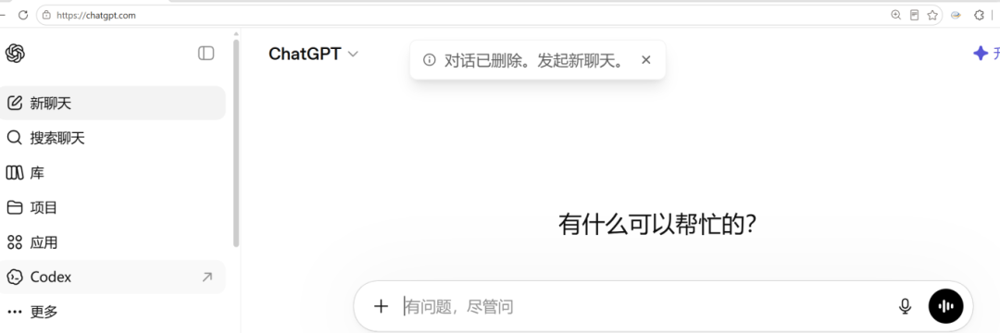
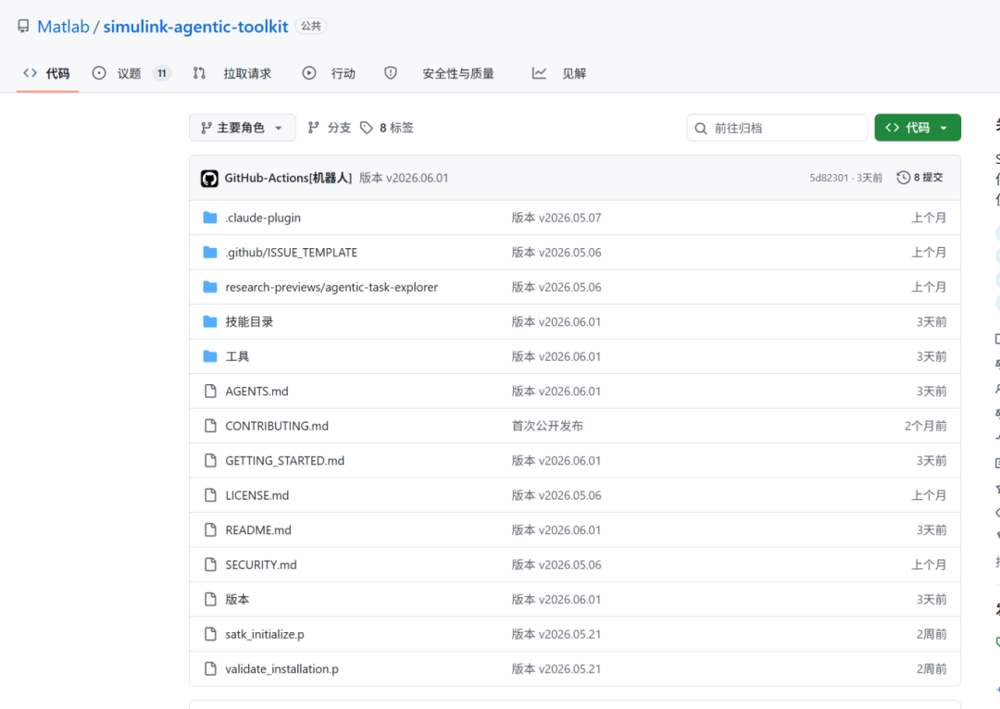
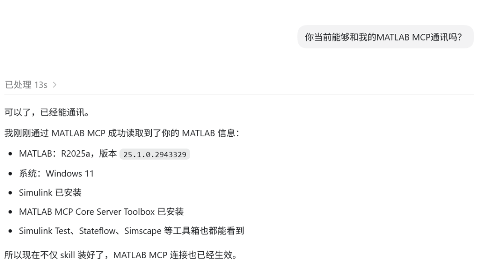
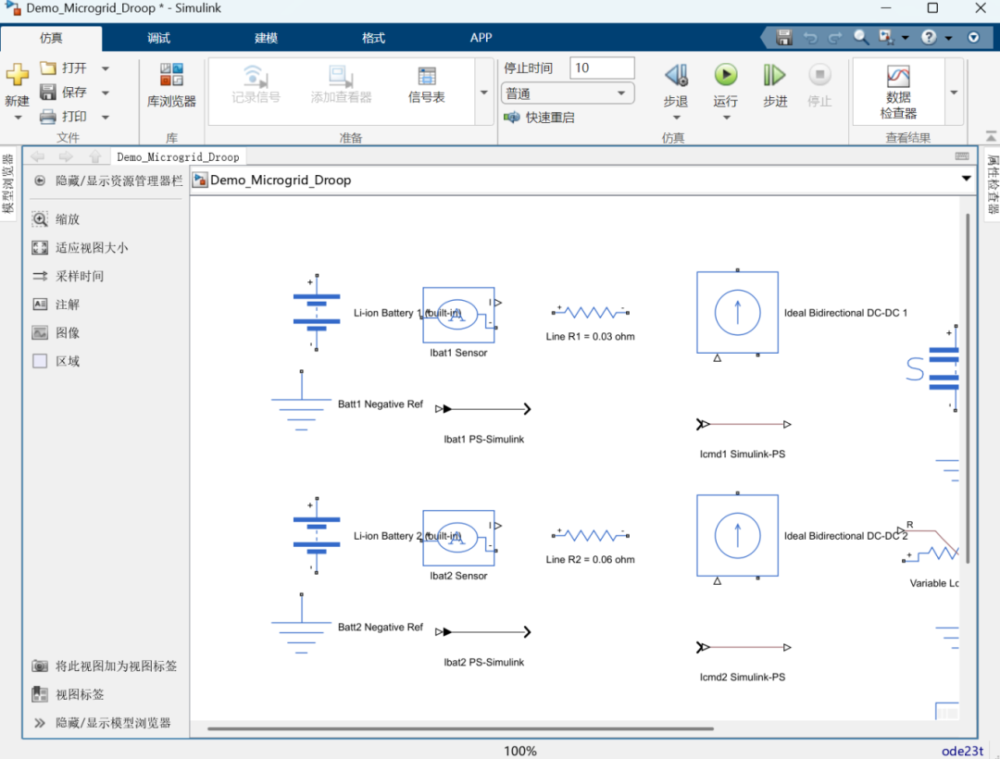
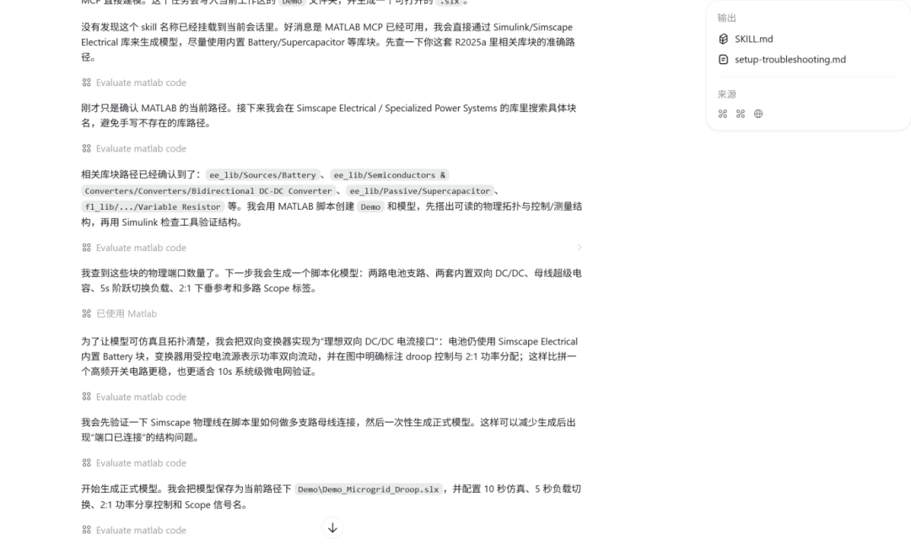
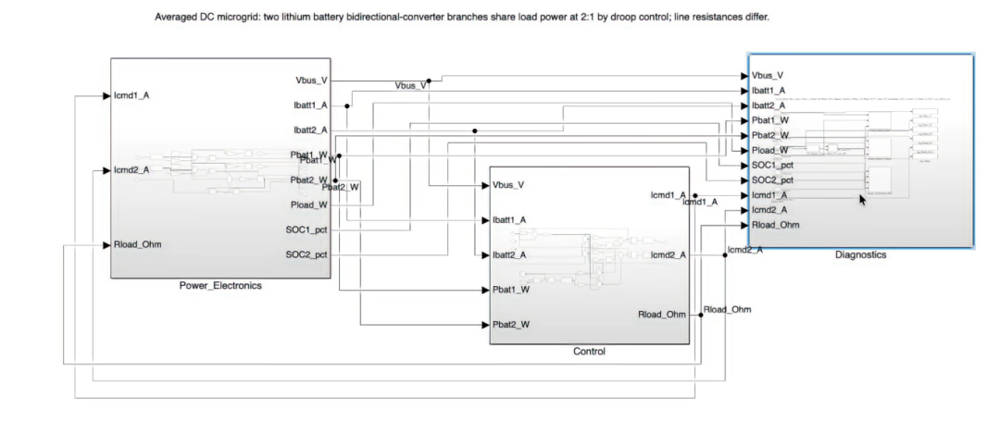
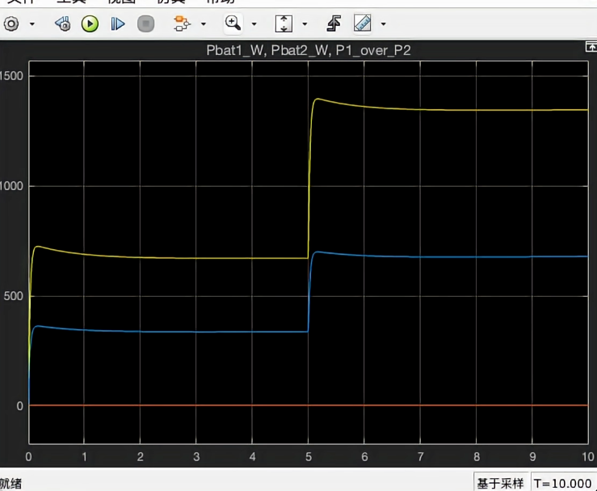

基于Codex智能
微电网Simulink模型
含详细操作步骤与提示词
最近AI大模型与各类软件结合发展迅速，结合网上各位大佬的探索，本期我们利用GPT5.5中的Codex进行Simulink模型的智能生成，看看AI模型在Simulink模块应用情况，同时后期我们也将尝试各类国内AI大模型与Simulink结合，看看哪种效果比较好，有兴趣的小伙伴点赞＋关注支持下哦。
01**
准备阶段环境配置
1）Codex
2）MATLAB MCP
3）Skill
4）MATLAB R2025a
（由于官方MATLAB MCP要求版本在2023a以上）
02**
Codex是什么？
Codex是OpenAI开发的AI编程模型/智能体，是专门用于编程开发方面，可以实现代码生成、代码理解和代码操作，我们可以直接通过GPT官网下载，按其提示步骤来就行。（因为我自己有账号，所以就可以直接通过这个方式，也是最简单方法。如果没有账号的话，网上还有其他方法，这里因为核心不是这个，所以不细讲。）

03**
MATLAB MCP是什么？
MATLAB MCP是Model Context Protocol（模型上下文协议）在MATLAB环境中的实现，是Math Works官方推出的开源工具，简单来说就是接口，负责Codex与Simulink对接。

这里附上官方的github链接：
https://github.com/matlab/simulink-agentic-toolkit
04**
实验环节
1）确认是否安装成功****
首先登录Codex软件，确认MATLAB MCP是否安装成功，这时候可以询问codex

2）生成个人skill（也可以用别人的）
提示词：基于这个仓库的内容https://github.com/matlab/simulink-agentic-toolkit 帮我生成一个能够调用MATLAB mcp能力的skill
（用别人的就用别人分享链接，在跟Codex说即可）
3）启动mcp
进入MATLAB软件后，我们发送指令添加临时路径和启动环境，这个要根据自己地址修改，也可以看前面给的官网
addpath("/.matlab/agentictoolkits/simulink")
satk_initialize
4）发送提示词实现自动操作
这时候我们给Codex发送提示词（提示词是参考小红书博主下一岸在哪）：
请你在当前路径下创建一个名为Demo的文件夹，并且在下面创建一个Simulink请你帮我调用simulink-power-electronics这个skill，帮我再Simulink里面搭建一个简易的微电网模型，包括如下需求:
1、包含两组锂电池/锂电池双向变换器，锂电池直接用Simulink自带模型不要自建
2、包含超级电容，超级电容跨接在母线上
3、包含一个可变电阻作为模拟负载，仿真时间10s，负载在5s的时候投切
4、两组锂电池之间使用下垂控制来控制两者为2:1的功率输出，两个电池连接到母线上的线路电阻略有不同来验证下垂的控制效果
5、引出必要的信号测量点和scope，注明scope中的信号的label


05**
实验结果
可以看出在codex与simulink模型目前是可以实现并且能够跑通，其结果跟我们要求也是一致，说明做法是可行。


个人建议
-
建议开一个plus会员，因为普通版的token点仅够一次模型生成，每个月才更新一次token点，对于我们想跑模型而言非常不友好。
-
目前Codex仅能支持简单Simulink模型要求，太复杂的会出现理解错误现象。
-
这个安装步骤和过程我这里省略了很多，是因为我觉得安装方面有问题就可以问codex就行，其回答比较精准且细致。
-
另外这个codex跑的过程需要花费很多时间，光我这个简单模型就跑了4个小时才跑出来。（因为我没开会员，用赠送的token）
END
点点赞
点分享
点喜欢